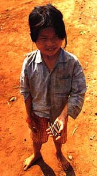

Maya Lin
While the war hurt my faith in the 1970's nation's leadership, I have a better understanding of the strength of its people.
Living in bunkers and shedding blood with people of all racial and ethnic groups is something that only those who go to war can have, especially in this increasingly balkanized and segregated society. I, for one, feel richer as a human being for the experience.
Some of those who missed the experience of fighting for a society which they publicly proclaim is the world's best include Bill Clinton and Newt Gingrich. Had they gone through the ordeal of Vietnam would they be better leaders? You bet!
Jan C. Scruggs, Esq. led the effort to create the Vietnam Veterans Memorial.

The war in Viet Nam was the war of my generation and has profoundly affected my life. As a young man, I actively opposed the war over a period of many years. I have come to understand through my photographic journeys through that country, that now is a time for the healing of wounds, not only between Vietnamese and Americans, but between the people of a divided Vietnamese community. Lou Dematteis is the author of the photography book "Portrait of Vietnam" published by W.W. Norton© 1996.